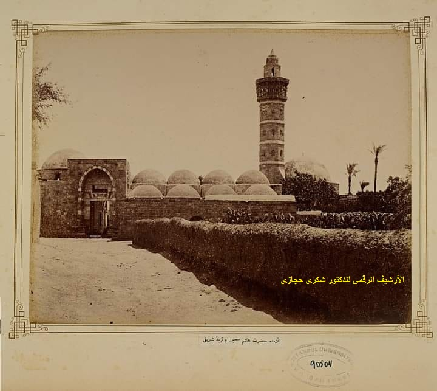
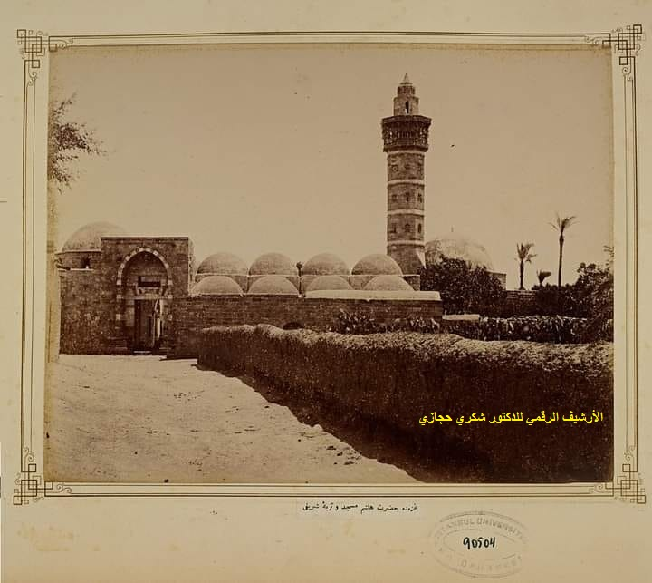
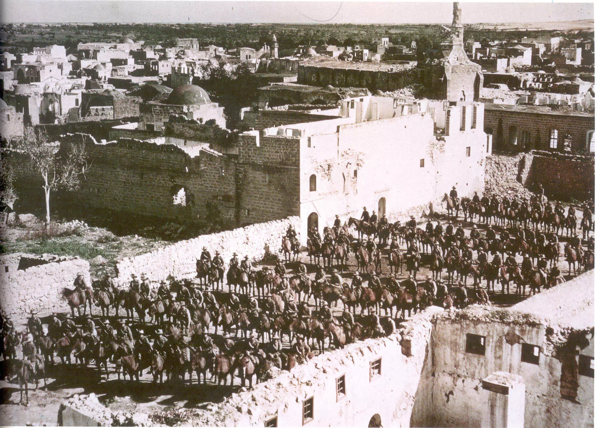

Learn more about my history
The Immigration of the Canalans
The first important human migration to Palestine began at the beginning of the third millennium B.C., namely, that of the Canadians, who were known as the places where they came down. After a period of time, there were three languages: the Canada, the Aramaic, the language of Christ, and the Arabic, and Palestine continued to be called the land of Kanaan until 1200 B.When the Cretaceous tribes invaded her.
Ibrahim's immigration is at peace.
In the third millennium B.C., Abraham emigrated peace from the town of Orr in Iraq to Palestine, and there was Isaac's father, Jacob, also called Israel, and to him the Israelis belonged to him.
Israelis
Because of the famine in Palestine, Jacob and his children emigrated to Egypt, where his son, Joseph, was based on its safes, a story that the Holy Quran, in Surah Joseph, separated. The Israelis settled in Egypt and there were many in number, but they began to be persecuted under Ramses II. Moses decided to bring them out to the land of Kanaan, a story that was mentioned in the Holy Koran in many places. The children of Israel stayed in the desert for 40 years before they were able to enter Palestine after the death of Moses. After the death of Moses, there was peace in the reign of the prophet Joshua. David was able to establish a kingdom for the children of Israel in Jerusalem after the Israelis had triumphed over Goliath.
Palestine under Greek occupation
Alexander's greatest victory over the Horse is one of the most important events of the fourth century B.C., where he captured Syria, Gaza and Jerusalem and annexed it to the Greek Empire in 332 B.After his death, his empire was divided among his leaders, and Palestine was under the control of Commander Antejos, who was defeated by the Championship in Gaza in 321 B.Since then, I have been under the rule of Antijos III in Syria in 198 B.C Since then, Palestine has been living in a state of unrest in many States, such as the Maccabees and the Arabs of Al-Anbat, in 90 B.M, and she remained a member of their "pure" capital until she was occupied by the Romans.
Palestine under Roman occupation
During the period of Roman rule, Palestine witnessed the birth of Jesus son of Mary, but in 37 the Jews roasted him to the Roman Governor and accused him of infidelity and death from the story of steel, with all its details in the Islamic and Surveying Colonies.
Jewish rebellion.
The Jews have tried to exploit the religious freedom that has been granted to them in Jerusalem since their return from the Babylonian families in the quest for a State of their own, but the Romanian Governor, with the help of the Arab population of the country, launched an attack on them in 71, occupied Jerusalem and killed a large number of Jews before fleeing to Syria, Egypt and other Arab countries. The last attempt to establish a Jewish State in Palestine was in 135, when a Jewish rabbi claimed to be insubordination, when Roman Governor Hadrian attacked them and occupied and destroyed the Jewish area of Jerusalem, and a new city was built in that place that was denied to Jews. After that incident, the Jews did not attempt to stir up any unrest in Palestine until the twentieth century, in the middle of which they witnessed the establishment of the State of Israel, more than 2,000 years after the demise of their State in 586 B.Mm-hmm. At the hands of Nassar.
The Islamic Fatah of Palestine
Al-Khalifa Abu Bakr al-Sadid sent several armies in 633 to open the country of Al-Sham, under the leadership of Amr bin al-Ass, and to expand the son of Abu Safian, Shafbil bin Hassana, and Abby Obaida bin al-Surrah. He defeated the rum in the valley of the vehicle south of the Dead Sea and tracked them to Gaza in 634. Amr bin Al-Ass made great victories over the Roma in the battle of Ajnadin in 634 and opened a stall, Besan Wald and Jaffa, and when Theodoros, the brother of Roman Emperor Hercules, took over the command of the Roman army, ordered Abu Bakr al-Sadiq, his leader, Khaled bin al-Walid, to go from Iraq to Palestine. Al-Khalifa Abubakr al-Sadid died and the caliph was taken over by Omar bin al-Tabhar, who ordered the Muslim armies present in Palestine to continue fighting to complete Fatah. Khaled bin al-Walid ordered the unification of the Islamic armies into one army. Khaled clashed with the Roma in the battle of Yarmouk, where the Muslim victory was a decisive moment in the history of Palestine, when the Romans were expelled from it. He required that Caliph Omar Benn receive the speech himself in the city of Jerusalem, which was then called "Ilya," and Omar brought to Palestine and wrote to Christians a covenant of security over their churches and crosses, requiring that none of the Jews dwell in that holy city. Since then, Arab tribes have flowed from Syria, Al Hijaz, found Yemen and inhabited Palestinian lands, most of which have become Muslim, and Arabic has become the dominant language.
amaouyan's Covenant 661 - 750
In the amaouyan covenant, Palestine belonged to Damascus, governed by Sulaiman Bin Abdulmalik. One of the greatest traces of that period was the rock dome built by Abdulmalik Bin Marwan in the place from which the Prophet came forth to heaven on the night of captivity and lameness, and the Al-Aqsa Mosque, which was completed by the Walid Bin Abdulmalik, which is still in existence today, and the city of Ramlah, where Solomon bin Abdulmalik built his famous palace and the White Mosque.
The Abassian Covenant 750 1258
After the end of the rule of the amaouyan State, Palestine came to belong to the Abasian State, visited by Al-Khalifa Al-Mamoudi and his son Al-Mahdi. In the shadow of the Abasiyah State, the process of Arabization has increased and new generations have emerged as a result of the matrimony between Arab pioneers and the people of the country.
Crusader occupation 1095 1291
The foreign occupation of Palestine has returned with the end of the 11th century. Europe has experienced many political, social and economic problems between raw material poverty, population growth, and differences between kings and knights and between Popes and kings. The raid on the east was a comfortable solution for all sides. The moral shipments began with a speech by Pope Urban II in 1095, in which the public demanded that the Holy Tomb of Christ be removed from the hands of Muslims and that Jerusalem be cleansed of them. Peter Al-Nak led the first two-century military campaign known as the Crusades because it took the Cross as its emblem. Peter occupied the sand, destroyed Jaffa and surrounded Jerusalem with an estimated 40,000 soldiers. After a month of siege, the small Egyptian garrison there surrendered, entering Jerusalem in 1099 and killing as soon as they entered large numbers of its Arab inhabitants, capable of many historical references of 70,000. The Crusaders declared the establishment of a Latin kingdom in Jerusalem and extended their influence to Ashkelon, Bissan, Nablus and Aca and settled in Tiberias.
The Battle of Hattin.
After a violent fight with the crusaders, Noureddine Zenke succeeded in recovering some cities and the Emirates. Salahuddin completed the victories, which were the famous Battle of Hattin, after which the Holy House was restored in 1187.
The battle of Ein Goliath.
During the reign of the monarchy, Saif al-Din Qatz and Dahir Bipers repelled the Mongol invasion that invaded large parts of the Muslim world in the battle of Ain Jalut near Nasiriyah in 1259 and was one of the most important and famous Islamic battles.
Ottoman covenant
The Ottomans triumphed over the Mullahs in the battle of Marj Dagg near Aleppo in 1516 and entered Palestine, which has since been under Ottoman rule for four centuries.
Napoleon Campaign 1799
France, led by Napoleon, tried to invade Palestine after the occupation of Egypt, but the campaign returned defeated after arriving in Acca, where it failed to enter the city thanks to its fortifications and the prowess of its leader, Ahmed Pasha.
For the British occupation of 1917.
After the victory of British troops against Turkey in World War I under General Allenby's command, Palestine entered in 1917 under British Mandate until 1948, and withdrew to allow Jews to establish their own State in Palestine, which was called Israel. With the help of both Britain and the United States, Zionist gangs succeeded in defeating Arabs in the 1948 war and declared the State of Israel an absence from the Palestinian arena for more than 2,000 years.

Learn more about my cities
Jericho, small Palestine.
Jericho is an ancient Palestinian city that has grown back to more than 10,000 years, known for its fertility and water wealth, the Palestinian vegetable and fruit basket. Listed by UNESCO on 17 September 2023. During the period of British and Jordanian rule, the southern part of Jericho belonged to the Jerusalem district, the northern part to the Nablus district, and in 1997 it was occupied by Israel and built in and around 16 settlements, setting up 10 military camps and bases. In the 1990s, it was handed over to the Palestinian National Authority after the Oslo Agreement and became the centre of Jericho Province in the West Bank, giving it its historical, geographical and tourist location the title of small Palestine or the miniature entity of history. In varying periods of time, they have suffered multiple Israeli military incursions and have been and continue to be affected by permanent and temporary military barriers, depending on the situation on the ground. It has been an important crossing point since ancient times, and the eastern gate of Palestine has been formed.

Beer Seven The oldest and largest historic city of Palestine.
The seven oldest and largest historic cities of Palestine, the
first Palestinian city occupied by British forces in 1917, was
ruled by the Ottomans for centuries and was a difficult number in
the wars in the region, especially the Arab-Israeli wars, given
their strategic location. According to the 2005 census, the city
of Beer had a population of 185,000, the vast majority of whom
were Jews, after most of its Arab population had been displaced
after the 1948 war. Some of the followers and academics now
estimate the population of Beersheba at around 200,000, some of
whom have been subjected to Israeli citizenship and the majority
of their land and property have been looted.The indigenous
inhabitants of Beersheba are Bedouin tribes and have been
displaced to refugee camps in Jericho and then to Jordan, some of
which are in Gaza.

Bethlehem
Some 2,500 feet above sea level, located 10 kilometres south of Jerusalem on the ancient convoy road, surrounded by interlocking hills extending to the east and around the city by fantastic scenes of olive chrome and grapes. However, the greatest historical and religious significance of the city of Bethlehem is that it is the birthplace of our master Isa.

A Jenin... An ancient city that disobeys the occupation.
The city of Jenin dates back to ancient times, one of the oldest inhabited cities in the world. It is located in the occupied West Bank of Palestine. The Jenin governorate consists of the city of Jenin (the centre), the Jenin camp and a group of villages. The city was known for its resistance to the Israeli occupation, particularly its camp, which became a symbol of resilience and resistance. He is subjected to ongoing military operations in an attempt to eliminate resistance.
Heifa before Nakba, the Pearl of the Levant
Those who visited the Palestinian coastal city of Haifa in northern Palestine before Nakba in 1948 had embraced the Egyptian, the Shami, the Tunisian and the Iraqi, a small city that was relaxed when Mount Carmel met in the Mediterranean, giving it a distinction between the cities of the Levant, reinforced by its social, cultural and economic diversity.

JJerusalem
The city of Jerusalem is the flower of the cities. The City of Letters and the Prophets held on to a long history of its roots across the ages and centuries. At a time when we, the Arabs and Muslims, need a correct reading of the history of Jerusalem in order to deal with this issue, we are witnessing a powerful attack by the Zionist movement to spread the wrong reading of the history of Jerusalem to the entire world. This attack culminated in the Israeli Government's commemoration of the 3,000-year-old King David Al-Quds. The Zionist objective is to complete the Judaization of the city after its occupation and rape, to spread Israel's claim that it is an eternal capital of Israel, which has sovereignty over the city, and to limit the question of Jerusalem to a dispute between Muslims and Christians over its holy places and how it is managed.

-
Brief historical timeline of Jerusalem:
- Jerusalem has a long history. It has been destroyed at least twice, besieged 23 times, attacked 52 times, and captured and recaptured 44 times.
- It was captured by the Muslims in 637 CE during the reign of Caliph Umar (رضي الله عنه). This occurred within five years of the death of the Prophet (ﷺ).
- The city was taken by the Christian Crusaders in 1099 and the Muslim and Jewish inhabitants were massacred. In 1187, the city was recaptured by Salahuddin Ayyubi. He not only let the surviving Crusaders free to leave the city, but also gave many of them provisions for their journey home.
- In 1244, Jerusalem was sacked by the Tatars, who annihilated the Christian population. They were driven out by the Ayyubids (descendents of Salahuddin Ayyubi) in 1247. Between 1260 and 1517, the city was ruled by the Mamluks. They were former slaves brought up as Muslim soldiers and played a pivotal role in checking the Mongol advance.
- From 1517 right up to 1917, the city came under the control of the Ottomans. They brought great prosperity to the city, particularly Sulayman the Magnificent, under whose rule were built the walls around the Old City.
- Jerusalem came under the control of the British between 1917 to 1948. Following civil war, the city was divided into two. The eastern half (including the Old City) became part of Jordan, while the western half became part of the newly established state of Israel.
- Following the 1967 ‘Six Day’, the whole of Jerusalem came under the control of the Israelis. They claim sovereignty of the site of Masjid al-Aqsa but custodianship is held by the Islamic waqf trust. However, Israeli forces are permitted to patrol and conduct searches within al-Aqsa.
Here is Gazza
Articles about Gaza
Gaza, a daughter of a long history, witnessed the vagaries of
time, called Napoleon: "The gate of Asia, the entrance of Africa";
she kept her name and home, despite all the accidents she had
experienced, and was punished by kings, invaders and greedy men.
In the southern region of the Palestinian coast of the
Mediterranean Sea, on an area of no more than 360 km2, the city of
Gaza. It was built on a hill about 45 m above sea level and on the
edge of fertile land, which comes immediately after the wilderness
of Sinai, to be the natural station for all those from Egypt, to
the Sham, and from Sham to Egypt. The name "Gaza" was replaced by
the kingdoms and powers that had been taken over. The Canadians
called it "Hazate," the Hebrews "Azza," and the Horseman "Hazato,"
and the ancient Egyptians called it "Gadato."
 In the Greek Lexicon Ioni, in the Turks, in Gaza, and in the
English, in Gaza. The Arabs called it "Gaza" or "Gaza Hashem." The
name "Gaza" was associated with the Arabs in the name of Hashem
Bin Abdul Manaf, who died there, returning from his trade to Mecca
in 524am. Gaza was the place of his caravan and the shrine of his
shrine. The people of Gaza did not lose sight of that honour and
the association between them and Quresh and Makkah, where their
city housed the mausoleum of the Second Grandfather of the
Messenger Muhammad (Pray for Allah) and named their largest mosque
in his name. One of the imams of Islam and its great
philanthropists, Imam Muhammad bin Idriss al-Shafei, was also born
in this city. In his book, Yaqout al-Hamawi, Gaza stated: "A city
gas at the far north side of Egypt, Gaza was a woman who built the
port of the city of the Sahel near the sea, and the mole bordered
from the Euphrates to the feathers adjacent to the Egyptian home."

So the son of Butta goes on his journey, and he says, "Then we
walked until we arrived in Gaza City, Egypt's first country, with
plenty of countries, lots of architecture, good markets, many
mosques, and fences on them." Historian Aref Al-Aref (E: 1973), in
his book, lists several possibilities for the meaning of the name
of Gaza, which may be powerful, invulnerable, and may be wealth.
While the first opinion is desirable, Palestinian historian
Mustafa Murad al-Dabagh, in a footnote to his encyclopaedia on the
Gazan home, is likely to mean between the store and the treasure
and what can be saved. This view was taken by the Lebanese
historian Anis Fareha in his book, entitled "The Names of Lebanese
Cities and Villages and Interpretation of their Meanings."
In the Greek Lexicon Ioni, in the Turks, in Gaza, and in the
English, in Gaza. The Arabs called it "Gaza" or "Gaza Hashem." The
name "Gaza" was associated with the Arabs in the name of Hashem
Bin Abdul Manaf, who died there, returning from his trade to Mecca
in 524am. Gaza was the place of his caravan and the shrine of his
shrine. The people of Gaza did not lose sight of that honour and
the association between them and Quresh and Makkah, where their
city housed the mausoleum of the Second Grandfather of the
Messenger Muhammad (Pray for Allah) and named their largest mosque
in his name. One of the imams of Islam and its great
philanthropists, Imam Muhammad bin Idriss al-Shafei, was also born
in this city. In his book, Yaqout al-Hamawi, Gaza stated: "A city
gas at the far north side of Egypt, Gaza was a woman who built the
port of the city of the Sahel near the sea, and the mole bordered
from the Euphrates to the feathers adjacent to the Egyptian home."

So the son of Butta goes on his journey, and he says, "Then we
walked until we arrived in Gaza City, Egypt's first country, with
plenty of countries, lots of architecture, good markets, many
mosques, and fences on them." Historian Aref Al-Aref (E: 1973), in
his book, lists several possibilities for the meaning of the name
of Gaza, which may be powerful, invulnerable, and may be wealth.
While the first opinion is desirable, Palestinian historian
Mustafa Murad al-Dabagh, in a footnote to his encyclopaedia on the
Gazan home, is likely to mean between the store and the treasure
and what can be saved. This view was taken by the Lebanese
historian Anis Fareha in his book, entitled "The Names of Lebanese
Cities and Villages and Interpretation of their Meanings."
Gaza Solid rock in front of the Israeli occupier.
Gaza lived under the darkest and most bloody days and suffering of the Israeli occupation. In his account of the endless confrontations between the inhabitants of Gaza and the forcibly displaced Palestinians and the Israeli occupation forces, the writer Harun Rashid says: "Gaza, from the very first moments of Palestinian displacement, has been a focus of national agitation.  These displaced persons, who came to her, carried in their eyes and hearts pictures of their cities, villages, farms and schools, continued to motivate them to infiltrate her and return to her fourth place." The Palestinian guerrilla movement and the sudden attacks on the people of Gaza, particularly in the 1950s, expanded into a remarkable guerrilla activity. During 1955 1956, the people of Gaza carried out more than 300 guerrilla attacks on several Israeli positions and settlements. After Israel and the resistance s occupation of Gaza following the 5 June 1967 war, Gaza became aware of a new pattern of ransom work. In the three years following the occupation, the guerrillas were in control of Gaza at night, and the Israelis were taking it back in the day, a fact investigated by the British Sunday Times in one of its 1969 issues, an investigation entitled "Gaza at night for the guerrillas." According to a study entitled "Armed Resistance in the Gaza Strip (1967 . 1974) " of Al-Athamneh, he considered that armed resistance in the Gaza Strip had grown steadily. During that period, a total of some 971 clashes with the occupation occurred in Palestine, with the share of Gaza alone of 730 clashes. From the Jabaliya al-Ghazawi camp, an uprising of stones began in 1987, during which time Hamas was founded to start a new turn on the question of Palestine, particularly in the history of Gaza, which was printed by the movement in its intellectual language and made it, over time, the starting point of its struggle against the Israeli occupier. In 2000, the Al-Aqsa intifada played a role in the development of confrontational tactics between the Israeli resistance and the occupying Power in Gaza, which led to Israel and the resistances withdrawal from Gaza in 2005. Subsequently, Israel launched four wars against Gaza after withdrawing from it; in December 2008, it was called "stained bullets," in November 2012, and in July 2014, it was a war of "sustained shovel" over Gaza. Israeli artillery and rocket attacks in 2019 killed dozens of civilians. At dawn on Saturday 7 October 2023, Operation Al-Aqsa, carried out by the Gazan resistance against the occupiers, involved a massive resistance attack on Gazan cover settlements, with more than 5,000 rockets and missiles, followed by a massive attack on settlements by land, sea and air. Israel and the resistances human losses amounted to more than 2,000 settlers and soldiers, more than 2,500 wounded, some 240 Israeli prisoners in Gaza, and billions of dollars of material losses as a result of the beating of settlement infrastructure, the escape of settlers and the paralysis of the Israeli economy. But Israel's response to what Operation Iron Swords called, with huge military, financial, political, American and European cover, is to be the innocent civilians in Gaza who are the victims of this war. Israeli retaliation killed more than 8,000 Palestinians, injured more than 20,000 civilians, according to Palestinian medical sources, and destroyed a large number of mosques, churches and hospitals, relief centres, schools, neighbourhoods and displaced persons and the resistance groups. Israel declared its objective to eliminate Palestinian resistance in Gaza and to relocate the Palestinian people of Gaza to the Sinai desert in Egypt. Gaza; the city that former Israeli Prime Minister Yitzhak Rabin wished to wake up one day, the sea was swallowed, but Gaza and the sea were fed by the gum of history, power and immunity before Israel was present in centuries, and was attended by Benjamin Netanyahu in his book "A Place Under the Sun" about a dialogue between him and an old Palestinian man from Jabalia Ghazawi camp: Where are you from? Palestinian: from Majdal (Achlon settlement). Netanyahu: Are you going back to Magdal? Palestinian: God willing, peace will be achieved, and we will return to Majdal. Netanyahu: If God wills, peace will come, you visit Majdal, we visit Jabalia, the Palestinian individual: we return to Majdal, and you return to Poland. Dialogue's over.
The occupation continues with the massacres... Blood and tears in Gaza..
To date, Palestinian martyrs have accounted for some 19,000, with 51,000 injured, mostly women and children, as a result of the ongoing Israeli war on the Strip more than two months ago. These massacres is still going and no one will try to stop them because they are happening in palestine that occupaied by Israel.